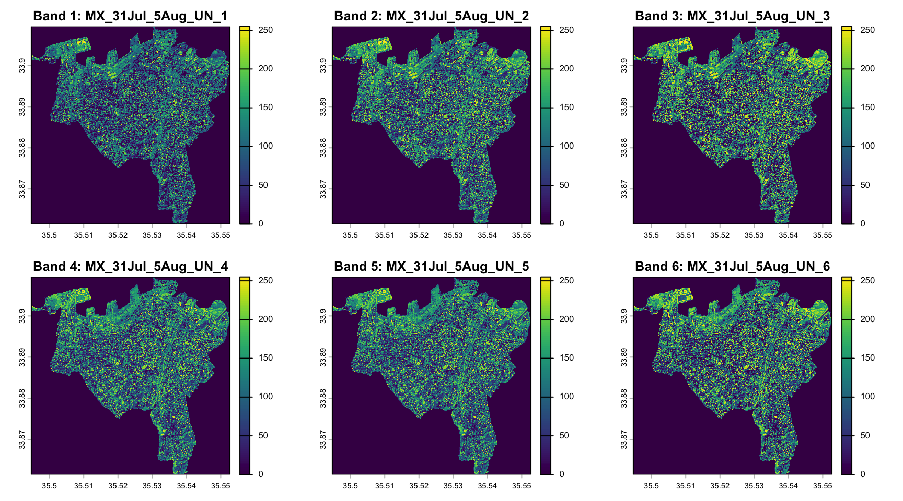
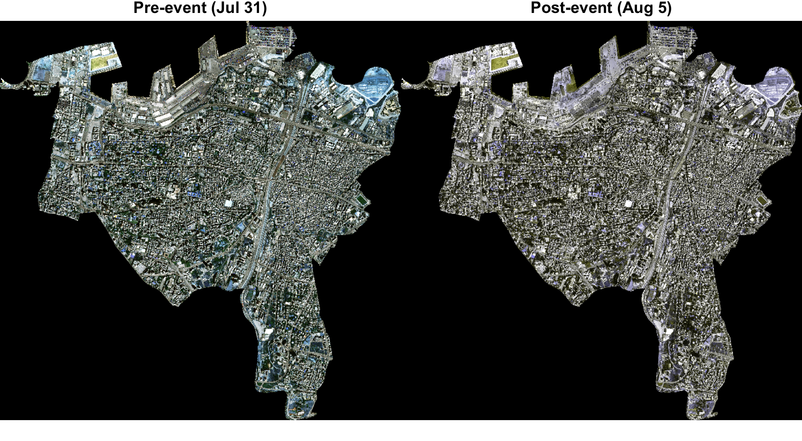
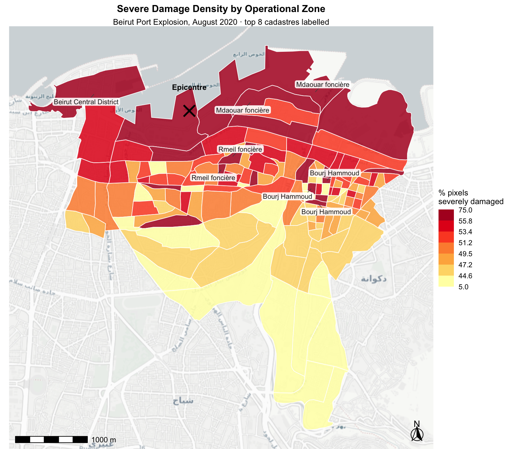
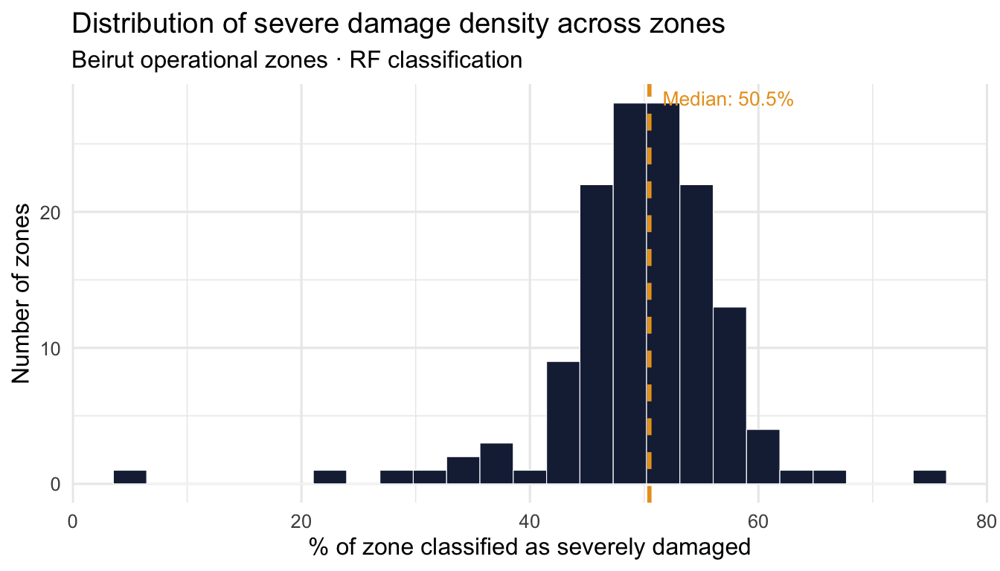
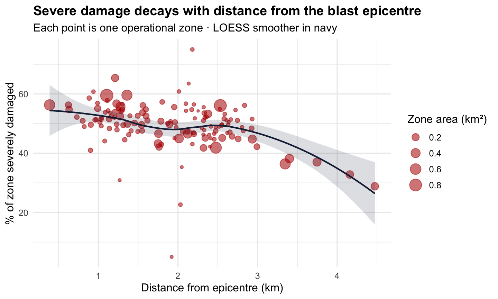

library(terra) # modern raster operations (replaces the retired raster package)
library(sf) # vector spatial data
library(tidyverse) # data wrangling + ggplot2
library(tmap) # thematic mapping
library(viridis) # accessible colour palettes
library(ggspatial) # scale bar, north arrow, basemap tiles
library(ggrepel) # non-overlapping text labels on maps
library(classInt) # break classification for choropleths
library(here)Part 1 · Satellite Data & Measuring Destruction
Geo Data Lab: Man-Made Disasters — SPACERAISE 2026
Lab Part 1 of 3 · ~35 min
Learning objectives
By the end of Part 1 you will be able to:
- Understand what MAXAR very-high-resolution satellite imagery is and how it was used to document the Beirut blast
- Load, visualise and interpret raster and vector satellite data in R
- Classify and map damage intensity across the blast zone, anchored to the blast epicentre
- Quantify and visualise how destruction decays with distance from the port
1.1 Background: the data and its origins
The Beirut Port Explosion
On 4 August 2020, approximately 2,750 tonnes of ammonium nitrate that had been stored unsafely at Beirut’s port exploded, killing more than 200 people, injuring thousands, and destroying or damaging an estimated 77,000 buildings across the city. The blast was felt as far away as Cyprus.
Who collected this imagery?
The satellite images used in this lab were collected by Maxar Technologies — at the time one of the world’s leading commercial Earth observation companies, operating the WorldView constellation of very-high-resolution (VHR) optical satellites (WorldView-2, WorldView-3, GeoEye-1) capable of sub-metre resolution (~30–50 cm panchromatic).
NoteA note on Maxar’s current status
Maxar Technologies no longer exists as a single company. In May 2023 it was acquired by private equity firm Advent International for $6.4 billion and subsequently split into two independent entities: Vantor (formerly Maxar Intelligence — the Earth imagery and analytics side, which still operates the WorldView satellites) and Lanteris Space Systems (formerly Maxar Space Systems — satellite manufacturing). The rebrand was announced in October 2025. The open data programme and the Beirut dataset remain accessible and the imagery copyright attribution still reads Maxar Technologies Inc., as that was the company name at the time of collection.
The open data release
Following the explosion, Maxar released pre- and post-event imagery under their Open Data Program, making it freely available for humanitarian response. The data we use in this lab comes from that release:
We work with three image tiles:
| File | Description |
|---|---|
10300100AB8F4A00.tif |
Pre-event WorldView image (July 2020) |
10300500A5F95600.tif |
Post-event WorldView image (August 5, 2020) |
104001005BD06800.tif |
Additional post-event coverage |
MX_31Jul_5Aug_UN.tif |
UN-processed composite (31 Jul – 5 Aug) |
The vector building footprints are from Ecopia Tech Corporation, who digitised structures from the satellite imagery.
WarningData licence
This data is licensed under Creative Commons Attribution-NonCommercial 4.0 International (CC BY-NC 4.0).
- ✅ You may use and adapt it for non-commercial purposes
- ✅ You must credit: Vector Data © 2020 Ecopia Tech Corporation; Image Data © 2020 Maxar Technologies Inc.
- ❌ You may not use it for commercial purposes
Full licence: creativecommons.org/licenses/by-nc/4.0
1.2 How does satellite damage assessment work?
Before touching the data, it helps to understand the chain of scale: how do we get from a satellite hundreds of kilometres above Beirut to a number — “12 % of this neighbourhood was severely damaged” — that a humanitarian agency can act on?
The answer is a four-step pipeline. The hardest thing to keep in your head as you read it is just how small a pixel is.
Step 0 — What is a pixel, really?
WorldView-2 and WorldView-3 produce panchromatic imagery at roughly 0.3–0.5 metres per pixel. To make that concrete:
| If a pixel is… | Then the area it covers is… | And a typical Beirut apartment building (say 20 × 30 m) is… |
|---|---|---|
| 0.5 m × 0.5 m | 0.25 m² — about a dinner plate | ~2,400 pixels |
| 1 m × 1 m | 1 m² — a doormat | ~600 pixels |
| 10 m × 10 m (Sentinel-2) | 100 m² — a small studio flat | ~6 pixels — building barely resolved |
| 30 m × 30 m (Landsat) | 900 m² — half a football pitch | <1 pixel — building invisible |
This is why MAXAR / WorldView-class imagery is special: at 0.5 m, a single building generates thousands of pixels, so a collapsed roof, a cleared lot, or a debris pile each leave a clear statistical signature. With Landsat, the whole building would be a smudge.
For the Beirut tiles we’ll work with, the raster covers roughly 80 km² of greater Beirut. At ~0.5 m resolution that is on the order of 300 million pixels per band, across 3 spectral bands (RGB), for both the pre- and post-event acquisition — i.e. ~1.8 billion numbers in total. This is why we don’t run the heavy steps live in the lab.
Step 1 — Image differencing (pixel-level change)
The first step asks, for every one of those 300 million pixels: did this patch of ground change between July and August?
The operation is band-by-band division of the post-event image by the pre-event one, on a log scale:
log10( Band_after / Band_before ) → positive = brighter after (rubble, dust, exposed concrete)
negative = darker after (collapsed structure, shadow)
near zero = no changeWe use the log-ratio rather than simple subtraction after − before because the two images were taken on different days, with different sun angles and atmospheric conditions. The log-ratio is more robust to those nuisance differences: multiplicative illumination effects become additive and largely cancel out. The output is a 3-band raster with the same ~0.5 m pixel size as the inputs.
NoteMore advanced approaches
Log-ratio differencing is a transparent, reproducible baseline — but the field has moved well beyond it. Two recent papers I admire:
- Scher, C., & Van Den Hoek, J. (2025). Nationwide conflict damage mapping with interferometric synthetic aperture radar: a study of the 2022 Russia–Ukraine conflict. Science of Remote Sensing.
- Scher, C., & Van Den Hoek, J. (2025). Active InSAR monitoring of building damage in Gaza during the Israel-Hamas War. arXiv preprint.
Both use radar (SAR) rather than optical imagery, which can see through clouds and at night — at the cost of harder-to-interpret pixel values.
Step 2 — Classification (pixel → damage class)
After differencing we have a number for every pixel, but humans don’t act on continuous log-ratio values — we act on categories like severe / moderate / little-to-no damage. So the next step classifies each pixel into a small number of damage classes.
The original analysis behind this dataset used unsupervised k-means clustering on the 3-band log-ratio stack: every pixel is treated as a point in 3-D colour-change space, and the algorithm groups pixels into k clusters of “similar change signature”. The number of clusters was chosen by the silhouette index (a measure of how well-separated the clusters are), which peaked at k = 3 — and those three clusters were then interpreted as severe damage, medium damage, and little to no damage. A supervised Random Forest was also explored but found to be less interpretable on this dataset.
The key point: classification turns billions of continuous pixel values into three discrete labels, while still respecting the ~0.5 m pixel grid. The output is a single-band raster at the original resolution where each cell is 1, 2, or 3.
Step 3 — Aggregation to zones (pixel → neighbourhood)
A pixel-level damage map is too granular for policy or humanitarian targeting — agencies operate at the neighbourhood (cadastre / operational zone) scale, not the dinner-plate scale. So the final step aggregates pixel classifications up using zonal statistics:
For each operational zone polygon, count how many pixels fall inside it, count how many of those are classified as severe damage, and divide.
So a zone of 0.2 km² contains roughly 800,000 pixels at 0.5 m resolution. If 96,000 of those are classified as severely damaged, the zone is reported as 12 % severely damaged. That percentage is the variable pct_severe_adj we’ll be mapping for the rest of the lab.
The pipeline in one picture
WorldView tile WorldView tile
(pre-event) (post-event)
~0.5 m pixels ~0.5 m pixels
│ │
└──────────┬──────────┘
│ log10(after / before), band by band
▼
3-band log-ratio raster ◀── Step 1: pixel-level change
(still ~0.5 m pixels)
│
│ k-means clustering, k=3 (silhouette-selected)
▼
Single-band damage class raster ◀── Step 2: pixel → class
(1 = severe, 2 = medium, 3 = little/none)
│
│ zonal statistics: count severe pixels per polygon
▼
Damage % per operational zone ◀── Step 3: pixel → zone
(the vector layer we load in §1.6)
TipKey limitations to keep in mind throughout
- Line-of-sight bias: at nadir the satellite sees rooftops, not facades. A building with intact roof but blown-out walls can look fine from above.
- Rubble removal: pixels cleared before the post-image was acquired show no change signature and read as undamaged.
- Cloud and smoke: optical sensors can’t see through either.
- Temporal gap: the “post” image was acquired ~24 hours after the blast — early enough that little reconstruction has happened, but late enough that some pixels have shifted (vehicles moved, fires extinguished).
- The 0.5 m floor: anything genuinely smaller than the pixel (a cracked window, a damaged car wheel) is invisible to this method.
1.3 Setup
1.4 The full pipeline (illustrated, not run)
The code below shows the entire pipeline from raw MAXAR tiles to the percentage of severely damaged pixels per zone — exactly the three steps described in §1.2. None of it runs in this document because the raw .tif files are several GB each and the k-means step takes ~10 minutes on a workstation. The pre-computed outputs are what we load in §1.5 and §1.6.
Read it as a recipe — note especially how each step changes the shape of the data: 2 × 3-band rasters → 1 × 3-band log-ratio raster → 1 × 1-band class raster → 1 polygon per zone.
Step 1 — Image differencing
# ── Load the pre-event image ──────────────────────────────────────────────────
# Source: data/maxar_raw/Before/10300500A5F95600.tif (WorldView, July 2020)
# 3 bands (R, G, B) · ~0.5 m pixel size · many GB
r_before <- terra::rast("data/maxmar_raw/Before/10300500A5F95600.tif")
# ── Load the post-event image ─────────────────────────────────────────────────
# Source: data/maxar_raw/After/10300500A6F8AA00.tif (WorldView, 5 Aug 2020)
r_after <- terra::rast("data/maxmar_raw/After/10300500A6F8AA00.tif")
# ── Load the operational zones (used as a mask and later for zonal stats) ────
# CRS: Deir el Zor (EPSG:22770) — local Lebanese projection
zones <- sf::st_read(
"data/geo/beirut_port_explosions_operational_zones_139.shp"
) |>
sf::st_transform(22770)
# ── Align the two acquisitions ────────────────────────────────────────────────
# The two tiles do not share an identical extent or grid. Resample the "after"
# image onto the "before" grid. method = "near" preserves original DN values
# (no interpolation) — critical because we will divide them in a moment.
r_after_matched <- terra::resample(r_after, r_before, method = "near")
# ── Crop and mask to the study area ───────────────────────────────────────────
# Shrinks file size by ~80% and makes the rest of the pipeline tractable.
zones_vect <- terra::vect(zones)
r_before_crop <- r_before |> terra::crop(zones_vect) |> terra::mask(zones_vect)
r_after_crop <- r_after_matched |> terra::crop(zones_vect) |> terra::mask(zones_vect)
# ── The actual differencing: log10(after / before), band by band ─────────────
# Output is still ~0.5 m, still 3 bands — but values now mean CHANGE, not colour.
diff_log <- log10(r_after_crop / r_before_crop)
terra::writeRaster(
diff_log,
"data/maxmar_processed/stack_after_before_log.tif",
overwrite = TRUE
)
NoteWhy log-ratio differencing?
Simple differencing (after − before) is sensitive to sun angle, atmospheric haze, and sensor gain differences between acquisitions. Log-ratio differencing turns multiplicative illumination noise into additive noise that largely cancels out. A value near 0 means no change; positive values mean the surface got brighter (rubble, dust, exposed concrete); negative values mean darker (collapsed structures, debris-shadow).
Step 2 — Unsupervised classification (k-means with silhouette selection)
The log-ratio raster has a continuous value per pixel per band. To get damage classes, we cluster pixels in 3-D log-ratio space. We sweep k from 2 to 12 and pick the k with the highest silhouette index — for this dataset that turned out to be k = 3, which we interpret as severe / medium / little-to-no damage.
library(cluster) # clara() — k-medoids variant of k-means
library(clusterCrit) # intCriteria() — silhouette index
# Read pixel values out of the log-ratio raster into a plain matrix
# (rows = pixels, columns = bands). Drop pixels with any NA.
rstDF <- terra::values(diff_log)
idx <- complete.cases(rstDF)
# Sweep k = 2..12, store both the cluster assignment AND the silhouette score
clustPerf <- data.frame(nClust = 2:12, SI_KM = NA_real_)
cluster_rasters <- list()
for (k in 2:12) {
# k-means on the log-ratio values
km <- kmeans(rstDF[idx, ], centers = k, iter.max = 50)
# Put the cluster labels back into a raster of the same shape as diff_log
cluster_vec <- rep(NA_integer_, terra::ncell(diff_log))
cluster_vec[idx] <- km$cluster
r_k <- terra::rast(diff_log, nlyrs = 1)
terra::values(r_k) <- cluster_vec
cluster_rasters[[as.character(k)]] <- r_k
# Silhouette index on a stratified random sample (full pop is too big)
samp <- sample(seq_along(idx)[idx], 2000)
si <- clusterCrit::intCriteria(
traj = rstDF[samp, ],
part = as.integer(km$cluster[match(samp, which(idx))]),
crit = "Silhouette"
)
clustPerf$SI_KM[clustPerf$nClust == k] <- si[[1]][1]
}
# Plot silhouette index vs k — the peak tells us the natural number of classes
plot(clustPerf$nClust, clustPerf$SI_KM, type = "b",
xlab = "Number of clusters (k)", ylab = "Average silhouette")
# For Beirut, k = 3 wins. Save that raster as our final classification.
damage_class <- cluster_rasters[["3"]] # values 1, 2, 3
terra::writeRaster(
damage_class,
"data/maxmar_processed/raster_kmeans_k3.tif",
overwrite = TRUE
)
NoteWhy unsupervised, not supervised?
A supervised Random Forest classifier was tried on this dataset and discarded as less interpretable than k-means. With unsupervised clustering we don’t need labelled training pixels — the algorithm just groups pixels with similar change signatures. The trade-off is that the cluster labels (1, 2, 3) are arbitrary and need to be matched to damage levels by visual inspection of where each cluster falls on the map.
Step 3 — Zonal statistics (aggregate pixels to neighbourhoods)
The final step counts how many “severe” pixels fall inside each operational-zone polygon, divides by the total pixel count to get a percentage, and attaches that number to the polygon as an attribute.
# Total pixels per zone (denominator)
n_total <- terra::extract(damage_class, zones_vect, fun = function(x) sum(!is.na(x)))
# Severe-damage pixels per zone — assuming cluster id 1 was matched to "severe"
n_severe <- terra::extract(damage_class, zones_vect,
fun = function(x) sum(x == 1, na.rm = TRUE))
zones$n_severe_px <- n_severe[, 2]
zones$n_total_px <- n_total[, 2]
zones$pct_severe <- 100 * zones$n_severe_px / zones$n_total_px
# This is the file we load in §1.6 as `raster_rf_damage.shp`
sf::st_write(zones, "data/geo/raster_rf_damage.shp", delete_dsn = TRUE)
TipSense-check the orders of magnitude
A zone of 0.2 km² at 0.5 m resolution contains roughly 800,000 pixels. If n_severe_px for that zone comes back as ~96,000, then pct_severe ≈ 12 %. If it comes back as 0 or as 800,000, something has gone wrong — either the cluster ID is mismatched or the mask did not align. Always sanity-check denominators on a known zone first.
1.5 Load and explore the composite
From here on, everything is live. We work directly with MX_31Jul_5Aug_UN.tif — the UN-processed composite that stacks the pre- and post-event RGB scenes into a single 6-band file (bands 1–3 = pre, bands 4–6 = post). This is a manageable derivative of Step 1 above; we use it for visualisation, while the damage numbers we map come from a vector file produced by Step 3.
# 6-band GeoTIFF: bands 1–3 = pre-event RGB, bands 4–6 = post-event RGB
# CRS is geographic (WGS84): resolution ~0.5m expressed in degrees
beirut_img <- terra::rast("data/maxmar_processed/MX_31Jul_5Aug_UN.tif")
beirut_imgclass : SpatRaster
size : 10593, 12811, 6 (nrow, ncol, nlyr)
resolution : 4.527509e-06, 4.527509e-06 (x, y)
extent : 35.4947, 35.5527, 33.8615, 33.90946 (xmin, xmax, ymin, ymax)
coord. ref. : lon/lat WGS 84 (EPSG:4326)
source : MX_31Jul_5Aug_UN.tif
names : MX_31~_UN_1, MX_31~_UN_2, MX_31~_UN_3, MX_31~_UN_4, MX_31~_UN_5, MX_31~_UN_6 nlyr(beirut_img) # number of bands (expect 6)[1] 6res(beirut_img) # pixel resolution in degrees (~0.5m at this latitude)[1] 4.527509e-06 4.527509e-06crs(beirut_img, describe = TRUE) # coordinate reference system name authority code area extent
1 WGS 84 EPSG 4326 World -180, 180, -90, 90ext(beirut_img) # spatial extent (lon/lat bounding box)SpatExtent : 35.4946952757966, 35.552697194005, 33.8614968010072, 33.9094567041828 (xmin, xmax, ymin, ymax)names(beirut_img) # band names if set[1] "MX_31Jul_5Aug_UN_1" "MX_31Jul_5Aug_UN_2" "MX_31Jul_5Aug_UN_3"
[4] "MX_31Jul_5Aug_UN_4" "MX_31Jul_5Aug_UN_5" "MX_31Jul_5Aug_UN_6"
TipRead the raster header like a story
The output above tells you four things — write them down before plotting anything:
- Layers: 6 — the 3 pre-event RGB bands stacked on top of the 3 post-event RGB bands.
- Resolution: at this latitude, ~0.5 m on the ground per pixel. Because the CRS is geographic (WGS84),
res()reports it in decimal degrees (~4.5e-6°), which is a confusing unit until you realise 1° ≈ 111 km at the equator. Reproject to a metric CRS if you ever need to read pixel size directly. - CRS: geographic (EPSG:4326). For zonal statistics later we’ll be in EPSG:22770 (Deir el Zor) — a mismatch in CRS between raster and vector is the single most common source of bugs in this kind of analysis.
- Extent: the lon/lat bounding box. Multiply (width × height) in metres to get the footprint — for the cropped Beirut tile this is on the order of 80 km², i.e. ~300 million pixels per band.
So when you plot(beirut_img[[1]]) below, every visible dot in that image is a 0.5 m × 0.5 m patch of Beirut — small enough to resolve a parked car, a market stall, a damaged roof corner.
Visualise all six bands individually
par(mfrow = c(2, 3))
for (i in 1:6) {
plot(beirut_img[[i]], main = paste0("Band ", i, ": ", names(beirut_img)[i]))
}
par(mfrow = c(1, 1))The band-by-band plots may not be immediately intuitive — this is why we use RGB composites.
Pre- and post-event RGB composites side by side
par(mfrow = c(1, 2))
plotRGB(beirut_img, r = 1, g = 2, b = 3,
stretch = "lin",
main = "Pre-event (Jul 31)")
plotRGB(beirut_img, r = 4, g = 5, b = 6,
stretch = "lin",
main = "Post-event (Aug 5)")
par(mfrow = c(1, 1))Even visually, the destruction around the port is immediately apparent in the post-event image.
1.6 Load the damage zones (vector)
This is the output of Step 3 of the pipeline in §1.4: a polygon shapefile where every operational zone carries the count and percentage of pixels classified as severely damaged. Each polygon represents the aggregation of hundreds of thousands of 0.5 m pixel decisions into one number a humanitarian agency can act on.
(The file name raster_rf_damage.shp is a historical artefact — an early version of the analysis did try a Random Forest classifier before settling on unsupervised k-means with k = 3. The numbers inside are the k-means results.)
# Operational zones with severe-damage pixel counts from the k-means classification
damage_zones <- st_read("data/geo/raster_rf_damage.shp", quiet = TRUE)
# Inspect
glimpse(damage_zones)Rows: 139
Columns: 12
$ OBJECTI <dbl> 1, 2, 3, 4, 5, 6, 7, 8, 9, 10, 11, 12, 13, 14, 15, 16, 17, 18…
$ ACS_COD <dbl> 10999, 10610, 10450, 10510, 10550, 10650, 10450, 10510, 10510…
$ Cdstr_1 <chr> "Beirut Central District", "Mdaouar foncière", "Marfa' fonciè…
$ Dstrc_1 <chr> "Beirut", "Beirut", "Beirut", "Beirut", "Beirut", "Beirut", "…
$ Govrnrt <chr> "Beirut", "Beirut", "Beirut", "Beirut", "Beirut", "Beirut", "…
$ zon_nmb <dbl> 1, 5, 4, 13, 39, 62, 2, 55, 15, 14, 12, 11, 9, 10, 17, 16, 19…
$ Shp_Lng <dbl> 0.045202611, 0.072433259, 0.042239645, 0.016107903, 0.0116163…
$ Shap_Ar <dbl> 5.226966e-05, 8.667112e-05, 5.621270e-05, 1.350386e-05, 5.961…
$ z_count <dbl> 2549948, 4228181, 2742309, 658791, 290824, 1895734, 1927993, …
$ pct_sv_ <dbl> 68.48371, 68.37011, 64.95605, 63.68108, 62.67027, 54.59718, 6…
$ pct___2 <dbl> 59.58479, 59.47877, 56.29231, 55.10234, 54.15892, 46.62404, 5…
$ geometry <POLYGON [°]> POLYGON ((35.51227 33.90421..., POLYGON ((35.53859 33…names(damage_zones) [1] "OBJECTI" "ACS_COD" "Cdstr_1" "Dstrc_1" "Govrnrt" "zon_nmb"
[7] "Shp_Lng" "Shap_Ar" "z_count" "pct_sv_" "pct___2" "geometry"damage_zones <- damage_zones |>
dplyr::rename(
object_id = OBJECTI,
acs_code = ACS_COD,
cadastre = Cdstr_1,
district = Dstrc_1,
governorate = Govrnrt,
zone_number = zon_nmb,
pct_severe_raw = pct_sv_,
pct_severe_adj = pct___2
) |>
dplyr::mutate(
area_m2 = as.numeric(sf::st_area(geometry)),
area_km2 = area_m2 / 1e6,
) |>
dplyr::select(-Shp_Lng, -Shap_Ar) # drop the unhelpful degree-based columns
glimpse(damage_zones)Rows: 139
Columns: 12
$ object_id <dbl> 1, 2, 3, 4, 5, 6, 7, 8, 9, 10, 11, 12, 13, 14, 15, 16, …
$ acs_code <dbl> 10999, 10610, 10450, 10510, 10550, 10650, 10450, 10510,…
$ cadastre <chr> "Beirut Central District", "Mdaouar foncière", "Marfa' …
$ district <chr> "Beirut", "Beirut", "Beirut", "Beirut", "Beirut", "Beir…
$ governorate <chr> "Beirut", "Beirut", "Beirut", "Beirut", "Beirut", "Beir…
$ zone_number <dbl> 1, 5, 4, 13, 39, 62, 2, 55, 15, 14, 12, 11, 9, 10, 17, …
$ z_count <dbl> 2549948, 4228181, 2742309, 658791, 290824, 1895734, 192…
$ pct_severe_raw <dbl> 68.48371, 68.37011, 64.95605, 63.68108, 62.67027, 54.59…
$ pct_severe_adj <dbl> 59.58479, 59.47877, 56.29231, 55.10234, 54.15892, 46.62…
$ area_m2 <dbl> 536396.23, 889423.71, 576891.05, 138590.48, 61181.85, 3…
$ area_km2 <dbl> 0.53639623, 0.88942371, 0.57689105, 0.13859048, 0.06118…
$ geometry <POLYGON [°]> POLYGON ((35.51227 33.90421..., POLYGON ((35.53…Anchor the map: the blast epicentre
The explosion originated at Hangar 12 of the Port of Beirut. Pinning this point lets us label distances, draw concentric reference rings, and quantify how damage decays with proximity to the source.
# Hangar 12, Port of Beirut (approximate epicentre coordinates)
epicentre <- sf::st_sfc(
sf::st_point(c(35.5189, 33.9013)),
crs = 4326
) |>
sf::st_transform(sf::st_crs(damage_zones))
# Distance from each zone centroid to the epicentre, in km
damage_zones <- damage_zones |>
dplyr::mutate(
dist_km = as.numeric(
sf::st_distance(sf::st_centroid(geometry), epicentre)
) / 1000
)
summary(damage_zones$dist_km) Min. 1st Qu. Median Mean 3rd Qu. Max.
0.3876 1.2699 1.9627 1.9109 2.4348 4.4732 1.7 Visualise the damage
Static map with epicentre and top zones labelled
To make the map interpretable (and not just decorative), we add two things:
- A cross marking the blast epicentre at Hangar 12 of the Port of Beirut.
- Labels for the 8 most-damaged cadastres, so the eye doesn’t have to jump between map and table to identify them.
library(ggplot2)
library(sf)
library(ggspatial)
library(classInt)
library(ggrepel)
# Compute quantile breaks
brks <- round(
classInt::classIntervals(damage_zones$pct_severe_adj, n = 7, style = "quantile")$brks,
1
)
# Top zones to label directly on the map
top_labels <- damage_zones |>
dplyr::slice_max(pct_severe_adj, n = 8) |>
dplyr::mutate(
label_xy = sf::st_centroid(geometry)
)
ggplot(damage_zones) +
annotation_map_tile(
type = "cartolight",
zoom = 14,
progress = "none"
) +
geom_sf(
aes(fill = pct_severe_adj),
colour = "white",
linewidth = 0.3,
alpha = 0.85
) +
# Epicentre marker
geom_sf(
data = epicentre,
shape = 4, size = 5, stroke = 1.4, colour = "black"
) +
geom_sf_text(
data = epicentre,
label = "Epicentre",
nudge_y = 0.003, size = 3, fontface = "bold"
) +
# Labels for top-damaged zones
ggrepel::geom_label_repel(
data = top_labels,
aes(label = cadastre, geometry = geometry),
stat = "sf_coordinates",
size = 2.7,
alpha = 0.9,
label.size = 0,
label.padding = unit(0.12, "lines"),
min.segment.length = 0,
segment.colour = "grey30",
segment.size = 0.3,
max.overlaps = Inf
) +
scale_fill_fermenter(
palette = "YlOrRd",
direction = 1,
breaks = brks,
name = "% pixels\nseverely damaged"
) +
annotation_scale(
location = "bl",
width_hint = 0.25,
text_cex = 0.7
) +
annotation_north_arrow(
location = "br",
which_north = "true",
height = unit(0.8, "cm"),
width = unit(0.8, "cm"),
style = north_arrow_fancy_orienteering
) +
labs(
title = "Severe Damage Density by Operational Zone",
subtitle = "Beirut Port Explosion, August 2020 · top 8 cadastres labelled"
) +
theme_void() +
theme(
plot.title = element_text(size = 11, hjust = 0.5, face = "bold"),
plot.subtitle = element_text(size = 9, hjust = 0.5),
legend.position = "right",
legend.title = element_text(size = 9),
legend.text = element_text(size = 8)
)Warning in st_point_on_surface.sfc(sf::st_zm(x)): st_point_on_surface may not
give correct results for longitude/latitude data
Warning in st_point_on_surface.sfc(sf::st_zm(x)): st_point_on_surface may not
give correct results for longitude/latitude data
1.8 Damage distribution
damage_zones |>
st_drop_geometry() |>
ggplot(aes(x = pct_severe_adj)) +
geom_histogram(bins = 25, fill = "#1a2744", colour = "white", linewidth = 0.2) +
geom_vline(
xintercept = median(damage_zones$pct_severe_adj, na.rm = TRUE),
colour = "#e8a020", linetype = "dashed", linewidth = 1
) +
annotate("text",
x = median(damage_zones$pct_severe_adj, na.rm = TRUE),
y = Inf, vjust = 1.5, hjust = -0.1,
label = paste0(
"Median: ",
round(median(damage_zones$pct_severe_adj, na.rm = TRUE), 1),
"%"
),
colour = "#e8a020", size = 3.5
) +
labs(
title = "Distribution of severe damage density across zones",
subtitle = "Beirut operational zones · RF classification",
x = "% of zone classified as severely damaged",
y = "Number of zones"
) +
theme_minimal(base_size = 12)
1.9 How does damage decay with distance from the port?
The histogram tells us how much damage there is overall, but not where. Plotting severe-damage percentage against distance from the epicentre gives us the spatial structure in a single chart — and a sanity check on the map.
damage_zones |>
st_drop_geometry() |>
ggplot(aes(x = dist_km, y = pct_severe_adj)) +
geom_point(
aes(size = area_km2),
alpha = 0.55,
colour = "#b30000"
) +
geom_smooth(
method = "loess",
se = TRUE,
colour = "#1a2744",
fill = "#1a2744",
alpha = 0.15,
linewidth = 0.8
) +
scale_size_continuous(range = c(1, 6), name = "Zone area (km²)") +
labs(
title = "Severe damage decays with distance from the blast epicentre",
subtitle = "Each point is one operational zone · LOESS smoother in navy",
x = "Distance from epicentre (km)",
y = "% of zone severely damaged"
) +
theme_minimal(base_size = 12) +
theme(
plot.title = element_text(face = "bold")
)`geom_smooth()` using formula = 'y ~ x'
NoteReading the decay curve
The drop-off is typically steep within the first 1–2 km of the port and then flattens. Points sitting above the smoother are zones that suffered more damage than their distance alone would predict — worth investigating (building stock, exposure, line-of-sight to the blast). Points below it are unexpectedly spared.
1.10 Most damaged zones — ranked
Rather than a plain table, we rank the top 15 cadastres by its distance from the epicentre. This pulls together magnitude and geography.
For reference, the same ten zones as a compact table:
damage_zones |>
st_drop_geometry() |>
arrange(desc(pct_severe_adj)) |>
slice_head(n = 10) |>
dplyr::select(zone_number, cadastre, area_km2, dist_km, pct_severe_adj) |>
mutate(
area_km2 = round(area_km2, 3),
dist_km = round(dist_km, 2),
pct_severe_adj = round(pct_severe_adj, 2)
) |>
knitr::kable(
col.names = c("Zone", "Cadastre", "Area (km²)", "Distance to port (km)", "% Severe"),
caption = "Ten most severely damaged operational zones"
)| Zone | Cadastre | Area (km²) | Distance to port (km) | % Severe |
|---|---|---|---|---|
| 118 | Bourj Hammoud | 0.018 | 2.18 | 75.00 |
| 6 | Mdaouar foncière | 0.218 | 1.21 | 65.38 |
| 110 | Bourj Hammoud | 0.009 | 2.13 | 63.50 |
| 113 | Bourj Hammoud | 0.016 | 2.01 | 60.84 |
| 27 | Rmeil foncière | 0.017 | 0.94 | 60.77 |
| 1 | Beirut Central District | 0.536 | 1.36 | 59.58 |
| 5 | Mdaouar foncière | 0.889 | 1.11 | 59.48 |
| 26 | Rmeil foncière | 0.042 | 0.89 | 58.59 |
| 50 | Rmeil foncière | 0.029 | 1.11 | 57.76 |
| 107 | Bourj Hammoud | 0.050 | 1.80 | 57.30 |
✏️ Exercise 1
TipYour turn
Compare zones: The map uses quantile breaks, which distributes zones evenly across colour classes regardless of the actual data distribution. Try changing
style = "quantile"tostyle = "jenks"(natural breaks) andstyle = "equal". How does the visual interpretation change? Which do you think is most appropriate here and why?Beyond distance: The decay curve in §1.9 explains a lot — but not everything. Identify the 3 zones that are the worst outliers above the LOESS smoother (more damaged than their distance predicts). Where are they on the map? What might explain the residual? Then do the same for 3 zones below the smoother. Hint: fit the LOESS yourself with
loess(), extractresiduals(), thenslice_max()/slice_min().Raster inspection: Load one of the individual image tiles (
10300100AB8F4A00.tifor10300500A5F95600.tif). What are its dimensions, resolution, and number of bands? Plot it and compare the pre- and post-event images visually.
Hint for Q3: use terra::rast(), then plotRGB() with appropriate band numbers.
NoteUp next
In Part 2 we load the survey data and ask: does what the satellite sees match what households reported on the ground — and where do the two sources diverge?